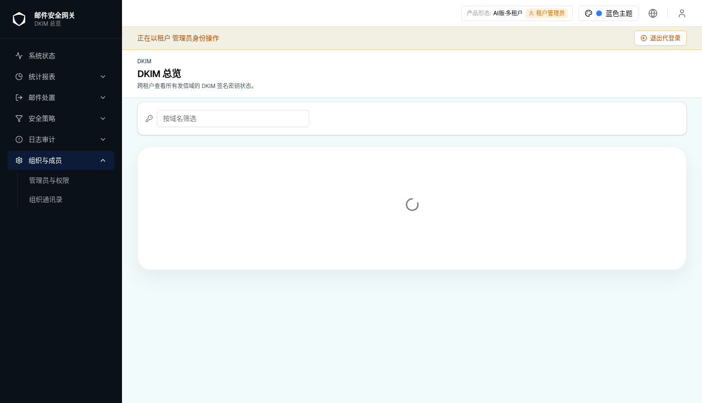
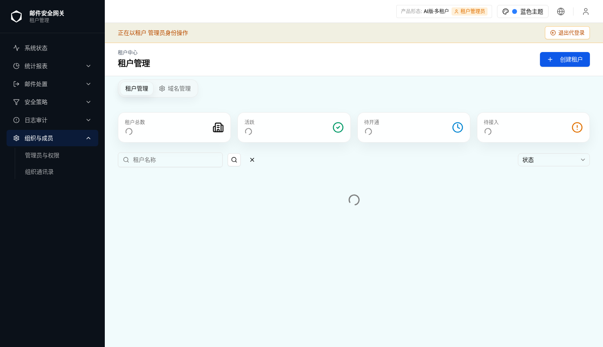

4.0 环境实拍证据（后端离线）

DkimManageDrawer 所在页面）
| 规格版本 | v1 |
|---|---|
| 生成日期 | 2026-07-28 |
| 所属模块 | 策略流水线 → 阶段2 收发信人策略 → 身份认证与仿冒检测 → 认证协议检查 子卡 |
| 页面路由 | /zh/security/pipeline（阶段2 · authSpoofing 抽屉内嵌 AuthSpoofingPage） |
| webapp 源码 |
src/components/security/auth-spoofing/DkimOutboundSigningSection.tsx宿主： src/components/security/auth-spoofing/ProtocolChecksSection.tsx抽屉： src/components/dkim/dkim-manage-drawer.tsx接口： src/lib/api/dkim.ts、src/lib/api/tenants.ts
|
| webapp commit | 9791661 |
| 需求依据 | 用户当前描述（“对 DKIM 外发签名功能生成 html spec”）+ 本仓库当前实现 |
| 历史对话 | 已使用：本会话前序轮次实现了该子卡、mock 路由、i18n 与测试 |
| 对照 spec | not-used（仅结构参考同模块 filter-rules-identity-auth-spoofing） |
| 验证环境 | Chromium · /zh · 蓝色主题 · 1473×847 · AI版·多租户 · 租户管理员视角 |
webapp 同时是原型与实际项目。本规格保留交互预览，但预览仅由真实状态截图和对应信息组成，
不包含可操作控件、事件或脚本。元素/字段/校验/API 信息取自当前源码，权限与形态差异取自
useTenant / usePermission / useProductForm 的实际判定分支。
验证限制（重要）：当前运行的 webapp 通过服务端代理向后端
127.0.0.1:18080 取数，而该后端在本环境未启动（日志持续 ECONNREFUSED）。
因此 /tenants、/tenants/:id/domains、/dkim/keys 等数据请求无法返回，
租户列表为空、平台视角被重定向到 /tenants、DKIM 页面停留在加载态。凡依赖真实数据或抽屉
写操作的状态本次无法在浏览器安全验证，均按技能要求标注“无法验证 · 后端离线”，
不伪造截图；其余信息以源码为事实源并注明。见 Q-001。
依据 DkimOutboundSigningSectionInner 的门控：canQuery = (isSystemAdmin || isTenantAdmin) && effectiveTenantId != null && !platformWithoutTenant；其中
platformWithoutTenant = capabilities.multiTenant && isSystemAdmin && effectiveTenantId == null。
子卡本身对所有形态渲染，作用域由“是否已确定租户”决定。
| 角色 | AI-单 | 传统-单 | 云-多 | AI-多 | 传统-多 |
|---|---|---|---|---|---|
| 平台管理员 | — | — | ✅* | ✅* | ✅* |
| 租户管理员 | ✅ | ✅ | ✅ | ✅ | ✅ |
✅ 显示且可编辑（可管理本租户签名） 🔒 显示但只读 ❌ 隐藏 — 无此角色 ? 无法验证
* 平台管理员在多租户形态下须先在页面顶部选定租户；未选租户时子卡显示引导空态
dkimOutbound.selectTenant 且不发起查询。注：阶段2 流水线路由对“平台视角 + 多租户 + 无作用域”整页重定向到
/tenants（PolicyPipelinePage 第 329–334 行），因此平台管理员通常在选定租户/进入租户上下文后才实际看到本子卡。
本子卡为本租户发信域名管理 DKIM 外发签名密钥：生成/导入私钥、发布 DNS 公钥、校验 DNS、
设为当前生效密钥、删除。它与同卡 SPF/DKIM/DMARC/PTR「入站校验」页签语义正交——
入站页签判定收到邮件的认证结果并决定动作；本子卡管理经本网关外发邮件的签名密钥。
因此本子卡走 DKIM 自有接口与内存态，不接入 AuthSpoofingConfig 的统一保存流。
| 功能点 | 说明 | 对应区域/状态 | 依据 |
|---|---|---|---|
| 发信域名 × 签名状态列表 | 列出本租户全部发信域名，每行显示当前启用 selector + DNS 状态徽章 / 待验证 / 未签名 | 4.1 默认态 | 源码 + i18n |
| 管理入口 | 每行「管理」按钮打开 DkimManageDrawer | 4.4 抽屉 | 源码 |
| 生成新密钥 | 输入 selector/算法/备注 → 生成 → 一次性展示明文私钥 | 4.4 抽屉 | generateDkimKey |
| 导入私钥 | 粘贴 PEM + selector → 导入 | 4.4 抽屉 | importDkimKey |
| 发布/校验 DNS | 展示待发布 TXT 记录名与记录值，可复制；「重新校验」回填 DNS 状态 | 4.4 抽屉 | verifyDkimDns |
| 设为当前 / 删除 | 激活某 selector 或删除（删除前须切走当前 selector） | 4.4 抽屉 | setDkimKeyStatus / deleteDkimKey |
| 作用域门控 | 平台管理员未选租户显示引导空态；租户管理员直接作用于本租户 | 4.2 选租户引导 | 源码门控 |
本子卡是「认证协议检查」模块内的可折叠区块（默认展开），渲染在 SPF/DKIM/DMARC/PTR 协议页签
内容下方。容器为 rounded-lg border bg-muted/10；头部为整宽按钮，含折叠箭头
ChevronDown（展开旋转 180°）、KeyRound 图标、标题
DKIM 外发签名 与副标题描述；展开区为域名状态表格。
| 区域 | 位置 | 内容 | 尺寸/布局 | 响应式 |
|---|---|---|---|---|
| A 折叠头 | 子卡顶部 | 箭头 + KeyRound + 标题/描述 | flex items-center gap-2 px-4 py-3，整宽点击 | 描述 truncate，窄屏单行省略 |
| B 内容区 | 头部下方 | 引导空态 / 加载态 / 无域名空态 / 域名状态表 | px-4 pb-4 | 表格外层 overflow-hidden rounded-md border |
| C 状态表 | 内容区 | 3 列：发信域名 / 签名状态 / 操作 | 操作列 w-[120px] text-right | 窄屏水平滚动 |
| D 管理抽屉 | 右侧 Sheet（覆盖层） | DkimManageDrawer | 由抽屉组件自管 | — |
因后端 127.0.0.1:18080 离线，下列依赖数据的默认态/空态/加载态与抽屉写操作
本次无法在浏览器安全获得真实渲染截图。为不伪造，本节以“环境实拍证据 + 源码级状态说明”记录：
环境证据展示当前 webapp 的真实加载态；每个业务状态的元素、触发路径、结果与 API 均据源码给出并标注验证状态。

DkimManageDrawer 所在页面）
| # | 元素 | 文案/图标 | 值/来源 | 状态判定 | 交互结果 | 形态/角色差异 | i18n key |
|---|---|---|---|---|---|---|---|
| 1 | 列头·发信域名 | 发信域名 | — | — | — | [Base] | authSpoofing.dkimOutbound.domainCol |
| 2 | 列头·签名状态 | 签名状态 | — | — | — | [Base] | …statusCol |
| 3 | 列头·操作 | 操作 | — | — | — | [Base] | …actionsCol |
| 4 | 单元格·域名 | mono 文本 | TenantDomain.domain | — | — | [Base] | — |
| 5 | 状态·已启用 | 已启用 selector：{selector} + DNS 徽章 | 该域 is_active 的密钥 | 存在 active key | — | [Base] | …activeSelector + DkimStatusBadge |
| 6 | 状态·待验证 | 待验证（secondary 徽章） | 有密钥但无 active | hasKey && !active | — | [Base] | …pendingVerify |
| 7 | 状态·未签名 | 未签名（outline 徽章） | 该域无任何密钥 | !hasKey | — | [Base] | …notSigned |
| 8 | 行操作·管理 | Settings2 + 管理 | — | outline / sm | 点击 → setManageDomain(domain) 打开抽屉 | [Base] | …manage |
| 元素 | 文案 | i18n key | 说明 |
|---|---|---|---|
| 引导提示 | 请先在页面顶部选择一个租户，再管理其 DKIM 外发签名。 | …selectTenant | 虚线边框居中提示，无表格 |
| 状态 | 文案 | i18n key |
|---|---|---|
| 加载中 | 加载中… | …loading |
| 无域名 | 该租户暂无发信域名，请先在「租户域名管理」中添加域名后再配置签名。 | …noDomains |
| 字段/按钮 | 类型 | 默认值 | 校验 | 操作结果 | 数据/API |
|---|---|---|---|---|---|
| 标题 | 文本 | DKIM 管理 — {domain} | — | — | dkim.manageTitle |
| + 生成新密钥 | Button | — | — | 展开生成表单 | dkim.generateNew |
| Selector（生成/导入） | Input | 空 | /^[a-z0-9-]{1,63}$/，失败 toast selectorInvalid | — | 请求 selector |
| 算法 | Select | RSA-2048 | 枚举 rsa-2048/3072/4096、ed25519 | 决定 algorithm+key_size | dkim.algo.* |
| 备注 | Input | 空 | 可选 | — | note |
| 生成提交 | Button | — | selector 合法 | 成功 toast generateSuccess + 弹一次性私钥 | POST /dkim/keys/generate |
| 私钥 (PEM)（导入） | Textarea | 空 | 非空，否则 toast pemRequired | — | private_key_pem |
| 导入提交 | Button | — | selector 合法 + PEM 非空 | 成功 toast importSuccess | POST /dkim/keys/import |
| 一次性私钥弹窗 | Dialog | 明文 PEM | — | 复制/下载 .pem；关闭后不可再看 | privateKeyOnceWarning |
| 待发布 DNS TXT | 只读展示 | 记录名 / 记录值 | — | 可复制 | dns_record_name / dns_record |
| 重新校验 | Button | — | — | 回填 DNS 状态 + toast dnsStatus.* | POST /dkim/keys/:id/verify-dns |
| 设为当前 | Button → 确认弹窗 | — | 确认 activateConfirmDesc | 成功 toast activateSuccess | PUT /dkim/keys/:id/status |
| 删除 | Button → 确认弹窗 | — | 当前 selector 需先切换（switchBeforeDelete）；确认 deleteConfirmDesc | 成功 toast deleteSuccess | DELETE /dkim/keys/:id |
| 界面元素 | 前端字段 | API | 请求/响应字段 | 格式化/转换 | 依据 |
|---|---|---|---|---|---|
| 发信域名列 | domains | GET /tenants/:id/domains | TenantDomain[]（id, domain, is_active…） | — | getTenantDomains |
| 签名状态列 | keyList.items | GET /dkim/keys?tenant_id&page&page_size | DkimKeyListResponse | 按 domain 归并；is_active→activeKeyByDomain | listDkimKeys |
| DNS 徽章 | active.dns_status | （随 keys 返回） | unverified/verified/mismatch/not_found/dns_error | DkimStatusBadge | dkim.dnsStatus.* |
| 生成密钥 | gen 表单 | POST /dkim/keys/generate | req: tenant_id/domain/selector/algorithm/key_size/note；res: DkimKeyWithPrivate（含一次性 private_key_pem） | — | generateDkimKey |
| 导入密钥 | imp 表单 | POST /dkim/keys/import | req: tenant_id/domain/selector/private_key_pem/note | — | importDkimKey |
| 校验 DNS | — | POST /dkim/keys/:id/verify-dns | res: VerifyDnsResult | 回填 dns_status/dns_checked_at/observed | verifyDkimDns |
| 设为当前 | — | PUT /dkim/keys/:id/status | req: { is_active: true } | — | setDkimKeyStatus |
| 删除 | — | DELETE /dkim/keys/:id | — | — | deleteDkimKey |
前端在 dev 下由 src/lib/mock/dispatcher.ts 拦截以上路由（本会话新增 /dkim/keys* 与
/tenants/:id/domains mock + 内存态）。但生产/当前预览的服务端代理仍指向
127.0.0.1:18080，该后端离线导致数据无法返回（见验证限制与 Q-001）。
| 场景 | 前置条件 | 操作 | 预期可观察结果 | 权限/租户边界 | 依据 |
|---|---|---|---|---|---|
| 作用域判定 | 多租户 + 平台 + 未选租户 | 展开子卡 | 显示引导空态，enabled=false 不发查询 | 仅本租户可管理 | 源码 |
| 查询开启 | 租户管理员或平台已选租户 | 展开子卡 | 并行拉取 domains + keys | tenant_id 作用域 | 源码 |
| 状态派生 | keys 返回 | — | 按域名归并出 active / 待验证 / 未签名 | — | 源码 useMemo |
| 抽屉关闭刷新 | 抽屉内发生写操作 | 关闭抽屉 | invalidateQueries(['dkim-keys']) → 状态列刷新 | — | 源码 |
| 正交隔离 | — | 子卡任意写操作 | 不触发 AuthSpoofingConfig 保存流 | — | 源码注释/实现 |
| 状态 | 触发条件 | 页面表现 | 恢复方式 | 验证状态 |
|---|---|---|---|---|
| selector 非法 | 生成/导入时 selector 不匹配正则 | toast selectorInvalid，不提交 | 修正后重试 | 无法验证 · 后端离线（正则据源码） |
| PEM 为空 | 导入未填 PEM | toast pemRequired | 粘贴 PEM 后重试 | 无法验证 · 后端离线 |
| 删除当前密钥 | 删除处于 active 的 selector | 提示 switchBeforeDelete | 先「设为当前」到其它 selector | 无法验证 · 后端离线 |
| 接口失败 | 任一 mutation 抛错 | toast 显示 e.message | 重试 | 无法验证 · 后端离线 |
| 后端离线 | 代理目标 18080 未启动 | 数据请求无响应，列表/加载态卡住 | 启动后端后重试 | 已实拍（4.0） |
| 编号 | 目标要求 | webapp 当前实现 | 状态 | 复核日期 | 验证依据 | 处理说明 |
|---|---|---|---|---|---|---|
| D-001 | 在认证协议检查下管理本租户 DKIM 外发签名 | 已实现独立可折叠子卡 + 复用 DkimManageDrawer | 已解决 | 2026-07-28 | 源码 + 单测（子卡3 + mock7 + 既有9 全绿） | 本会话新增，v1 |
| D-002 | 平台管理员与租户管理员均可管理 | canQuery = (isSystemAdmin||isTenantAdmin)&&tenant!=null；平台未选租户显示引导 | 已解决 | 2026-07-28 | 源码门控 + 单测覆盖 | 形态/角色矩阵见 §1 |
| D-003 | 与入站 DKIM 校验语义解耦 | 走 DKIM 独立接口/内存态，不入 AuthSpoofingConfig 保存流 | 已解决 | 2026-07-28 | 源码实现与注释 | 正交设计 |
| D-004 | 规格应含真实运行截图 | 后端 18080 离线，业务数据态无法真实呈现 | 未解决 | 2026-07-28 | 服务端日志 ECONNREFUSED；4.0 实拍加载态 | 待后端可用后补拍，见 Q-001 |
| 编号 | 事项 | 原因 | 状态 | 复核日期 | 验证依据 | 处理说明 |
|---|---|---|---|---|---|---|
| Q-001 | 业务数据态（默认/空/抽屉/校验/激活/删除）的真实截图 | 预览环境后端 127.0.0.1:18080 未启动，数据请求 ECONNREFUSED | 无法验证 | 2026-07-28 | 服务端日志；/system/dkim、/tenants 实拍均为加载/空态 | 后端恢复后按 §4 逐状态补拍 |
| Q-002 | 平台管理员进入阶段2 抽屉的完整路径（选定租户后是否解除重定向） | 租户列表为空，无法在 UI 选定租户复现 | 无法验证 | 2026-07-28 | PolicyPipelinePage 329–334 源码 + 实拍重定向 | 需后端返回租户后确认 |
| Q-003 | dev mock 与生产后端对 /dkim/keys 响应结构是否完全一致 | 当前仅前端 mock 可用，后端契约未在本环境联调 | 待确认 | 2026-07-28 | mock 依据 DkimKey 类型；后端未联通 | 联调时以后端为准 |
| 版本 | 日期 | webapp commit | 对照 spec commit | 摘要 |
|---|---|---|---|---|
| v1 | 2026-07-28 | 9791661 | not-used | 初版：DKIM 外发签名子卡（域名×签名状态表、管理抽屉生成/导入/发布DNS/校验/激活/删除、作用域门控、形态×角色矩阵）。业务数据态受后端离线限制标注为无法验证，附环境实拍证据。 |